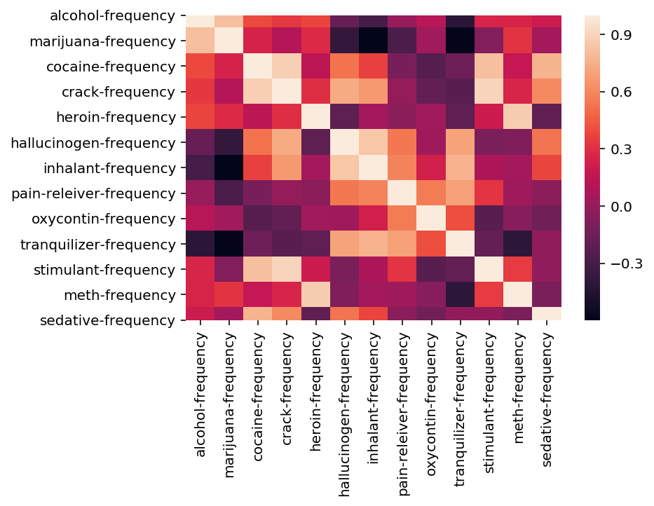
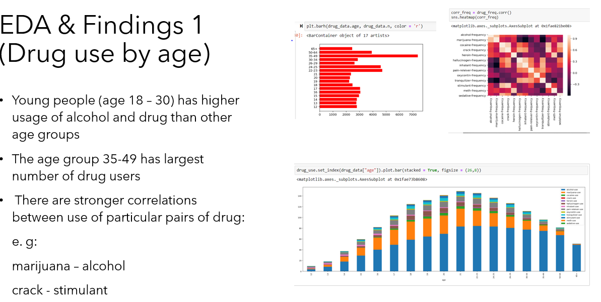

Civic data analysis
This is my assignment about EDA & visualization and hypothesis test of a SAT score dataset and a drug abuse dataset.
I used pandas, Numpy, Matplotlib and several other Python packages to process and visualize the data, and obtained insights.
Then I formed hypotheses and justified them with statistical testing.
Link to Git Repo
Technologies:
- - Pandas
- - Numpy
- - Seaborn
- - Matplotlib
Insights
